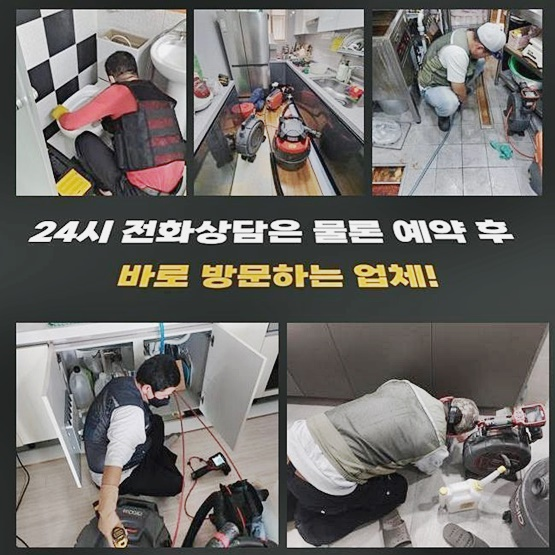
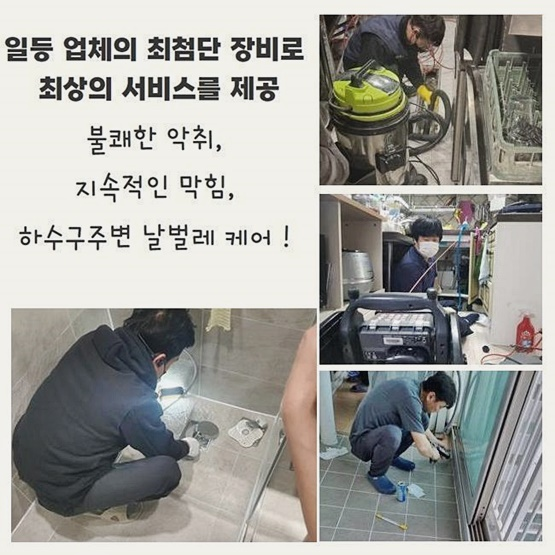
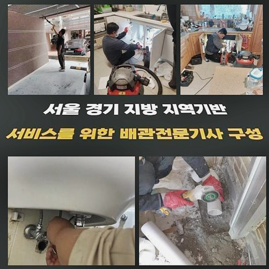
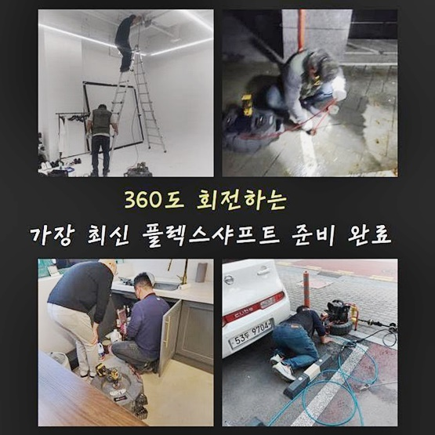
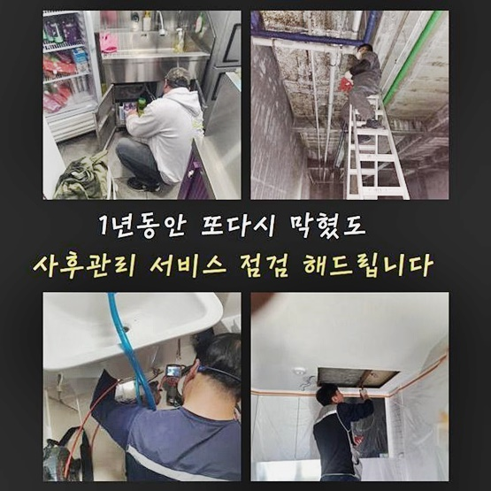
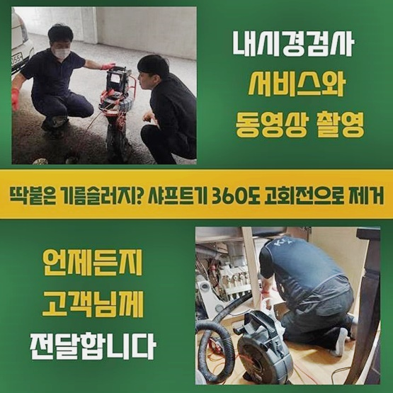
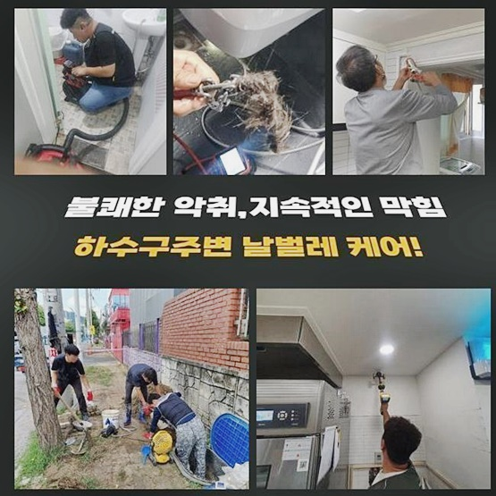

🏠 부천 고강본동싱크대배수관막힘 오정동 배관내시경카메라 출장수리
용인시 처인구 배관막힘 전문 시공 후기

📋 작업 개요
- 위치: 용인시 처인구, 수원시 영통구, 화성시 동탄
- 서비스 유형: 배관막힘, 고압세척, 내시경점검
- 작업 일시:
- 업체명: 하수구수사대 (010-5615-2118)
🔍 문제 상황
부천 고강본동싱크대배수관막힘 오정동 배관내시경카메라 출장수리
배수관막힘을 관리하는 전문업체에서 작업을 장기간 하다보니 세대 내부와 더불어 실외의 장애들도 복구가 필요한 경우들이 종종있습니다
외부의 하수파이프는 폭우가 많이 내리는 등의 기후 변화가 일어나면 오염물이 들어가면서 생각지도 못하게 막히고 마는 상황이 발생해요
이럴 땐 징후가 보이지 않아 모두가 생각하지 못한 이슈에 부딪히게 되니 신속한 대응이 힘들어요
오늘 말씀드리는 하수배관 정비 작업을 통해 어떤 방법으로 처리하게 되는지 면밀히 전해드릴게요
저희 기사님은 하수관막힘을 전문적으로 장기간 해왔기 때문에 다양한 상황의 막힘 상황을 순조롭게 처리해드립니다
고객님들의 요청에 따라 찾아간 곳은 물을 쓸 경우 밖에 위치한 하수배관에서 물이 흘러넘치는 상황이었어요
현장에 도착후 물이 역류하는 정황을 확실하게 알 수 있었죠
확인을 위해 문제 위치를 얕게 파보았는데 땅 밑에 배수관이 형태를 드러냈습니다
단번에 뚜렷한 문제점이 드러나지 않았다 해도 어느 부분의 하수관로가 파열됐거나 오염물이 유입되는 틈새가 생긴 것으로 추측할 수 있었습니다
여러종류의 하수관 공사들을 진행했고 이 위치와 흡사한 사례도 해결했던 경력이 충분해서 문제가 되는 요인을 짐작할 수 있었어요
급박한 상황이라며 집 부근에 있는 확인되지 않은 하수관 수리 업체나 공구상 등에 연락할 경우 원인을 발견하지 못하고 금액만 지불할 수 있으니 조심해야해요
일단 많은 물을 흘러가게 하는 배수테스트를 실시했는데요

🔎 원인 분석
💡 전문가 진단: 정밀 진단 장비를 사용하여 슬러지의 고착 여부를 판명하고 타격/세척 작업을 실시했습니다.
수 많은 물이 거듭해서 배출되는 것을 눈으로 직접 체크해 볼 수 있었습니다
바닥을 더 발굴해보니 제일 큰 배수파이프가 갈라진 것을 확인하게 되었습니다
배수로 크기가 큰 것은 물론 대량의 토사가 내부에 들어가 있어 고치는 것이 어렵겠다고 파악하게 된 순간이었죠
저희 하수배관 막힘 팀은 가장 처음으로 관로를 탐지하여 내부 환경을 신중히 확인해 보기로 하였죠
배관을 점검하려고 하수관이 심어진 지점들을 확인하고 더 깊이 굴착작업을 진행했습니다
배관의 다른 쪽에 피해를 주지 않도록 서서히 신중하게 작업했습니다
관로를 탐지하면서 더 손상된 장소가 있는지를 확인해 보았습니다
연결되는 하수관으로 하수관로 내시경 장치를 삽입해 추가로 금이 간 부분들이 있는지를 살펴보았는데요
배수관 안쪽으로 나뭇가지들과 기름때 덩어리가 가득한 상태를 볼 수 있었죠
아마도 깨진 배수파이프로 나무의 잔가지들과 잔해들이 들어간 듯 확인되었습니다
예상한것 보다 수 많은 잔가지들을 확인하고 다소 당황하였지만 깨끗하게 치워주지 않게 되면 다음번에도 막힘현상의 요인이 되어 하수관 시공이 가능한 저희팀이 처리해야 할 현장이었습니다
샤프트 도구의 헤드부분을 사용해 갈아내는 방식을 진행하기로 결정하였어요
식물 덩쿨의 크기가 크다보니 작게 깎아내지 않으면 바깥으로 꺼내기가 힘든 상태라고 추정하였습니다
하수관 세척작업을 진행하려면 계속해서 배수관 내시경 카메라를 주시하면서 세정 작업을 진행해야 타 지점에 차질이 생기지 않습니다

🔧 작업 과정
샤프트 도구는 파이프 안쪽의 찌꺼기들과 기름때덩어리들을 성공적으로 갈아내며 세정 할 수 있는 중요한 기구예요
올바른 하수관막힘 팀이라면 꼭 소유해야 하는 전문 도구라고 생각하시면 됩니다
상황에 맞게 스프링기기를 적용하여 외부로 배출하는 상황도 있습니다
스프링기기는 전기 원동력을 사용하여 오염물을 분해하고 외부로 내보내는 장치입니다
이번 작업장은 하수관 깊이가 깊고 속 안의 공간들을 확보하는 것이 힘들어서 샤프트 도구가 뚫어내기에 좋은 것으로 생각하였습니다
초기과정으로 깎아내는 시공을 진행해드리고 하수배관 물 흐름이 막힌 속안을 다시 점검했는데요
플렉스 샤프트 기기에 체인을 결합해서 스핀 기능으로 막힌 오염물에 갈아내는 방식을 실시하였습니다
식물줄기들이 생각 이상으로 굵고 많기 때문에 굵직한 체인장비를 써야만했어요
부유물들이 분쇄되는 소음이 배수관 바깥쪽에서도 들리는 정도로 상당히 컸어요
쌓여있는 나뭇가지들의 크기가 커서 분해 활동이 힘들었습니다
석션장비로 흘러나온 물을 빨아들여서 제거한 다음 하수배관을 접합하는 작업을 진행했습니다
PVC 성분으로 잇는 작업들을 처리했는데요
PVC 소재는 강하면서도 탄력이 있는 편이라 내부용 배수관으로 대부분 현장에 이용합니다
하수관 내시경기기로 다른 부분도 살펴본 결과 추가적으로 깨진 부분을 발견했습니다
하수관이 낡는건 보통 같이 이루어져서 많은 곳이 함께 약해지면서 이슈가 발생할 수 있습니다
하수관로 막힘을 뚫는 저희 기사님이 문제장소에서 시공을 해보니 통계적으로 거의 다 그런 것 같더라고요
파악한 문제 부위를 파보았더니 가지런하게 놓인 배수파이프 또한 부서져 있는 것을 확인했습니다
곳곳에 부식된 부분이 많았기 때문에 작업 소요시간 또한 늘어났어요
낡은 배관에 유지보수를 실행하지 않으면 장애가 해결되지 않으니 연결 부속들을 활용하여 복구작업을 완료했습니다
이곳도 PVC 배수관을 설치했고 접합 부위에 틈들이 생기지 않게 정밀하게 실행해드렸습니다
한번 더 내시경장치로 내부 현황을 체크한 후 문제가 없다는 결론을 지을 수 있었죠


✅ 작업 완료
배수시험을 실행하였습니다
배수로에서 반대로 올라오거나 막히는 상황없이 생활하수가 배수로로 원활히 흐르고 위로 올라오는 현상도 없으므로 물흐름이 원활한지 확인하는 테스트를 마친 후 바닥면을 정리한 후 공사를 마쳤습니다
오늘 사례처럼 배수설비에 충격을 가할 수 있는 공사의 경우에는 꼼꼼한 전문팀의 도움이 필요한 일입니다 그러므로 집에서 수리를 시도하려 하다가 막대한 손실들을 초래할 수 도 있어요
고장이 생기면 간단히 해결할 수 있다면 좋을테지만 잘 안되는 경우 필수적으로 전문가의 지원 받기를 제안드립니다
하수관막힘으로 문제상황이 생겼을때 놀라지 마시고 저희 전문기사님께 문의 주시길 바래요
바로 출동하여 확실하고 신속히 문제들을 처리하여 드릴 것입니다




⚠️ 하수구 배관 막힘 예방 및 관리 가이드
- ✅ 머리카락, 비닐, 물티슈 등 물에 분해되지 않는 이물질은 절대 흘려보내지 마세요.
- ✅ 기름기 많은 식기는 설거지 전 키친타올로 먼저 기름때를 닦아내세요.
- ✅ 주기적으로 배수구에 뜨거운 물을 가득 부어주어 유지방 고착을 방지하세요.
- ✅ 작업 후 1년 이내 재발 시 무상 A/S 보증 서비스를 제공합니다.
💡 핵심 정리
- 확실한 장비 작업(내시경 점검 및 샤프트 스케일링)으로 원인을 뿌리 뽑습니다.
- 작업 후 1년 이내에 동일한 부위 재발 시 100% 무상 A/S 서비스를 보장합니다.
- 서울 · 경기 · 인천 전 지역에 24시간 언제든 긴급 출동할 수 있도록 항시 대기 중입니다.
❓ 자주 묻는 질문 (FAQ)
🚨 용인시 처인구 배관막힘 문제로 고민이신가요?
정확한 원인 진단과 확실한 시공으로 재발 없는 해결을 약속드립니다.
24시간 긴급 출동 | 서울 · 경기 · 인천 전지역 | 1년 내 재발 시 무상 A/S